Engineering Reliable Software
Correctness begins with a failure we can reproduce, inspect, and preserve as evidence.
The arrival board says the next bus is −3 minutes away.
The computing system executed the arithmetic operations correctly. The program subtracted the current time from a prediction, converted the result to minutes, and printed the number. And someone standing in the Vancouver rain saw something that did not make sense.
The program ran, but its output was not useful. Software construction requires code that expresses the right problem, rejects bad states, survives change, and gives us enough evidence to find mistakes.
We will start by building one small part of a transit information system and using it to establish the working loop for the course.
By the end of this chapter
- distinguish source code, a build, a test, and a running program;
- explain what correct, comprehensible, and changeable mean in a concrete case;
- use Java 25, Gradle, JUnit, and Git as one short feedback loop;
- turn an observed failure into a regression test;
- treat generated code as an implementation to inspect, not as evidence of correctness.
1.1Match the Implementation to the Requirement
Suppose our first requirement reads:
Given the scheduled and predicted arrival times, describe a vehicle as early, on time, or late.
A plausible implementation is:
package ca.ubc.ece.cpen221.transit;
public final class ArrivalStatus {
private ArrivalStatus() { }
public static String describe(int scheduledMinute, int predictedMinute) {
int difference = predictedMinute - scheduledMinute;
if (difference > 0) {
return "LATE";
}
return "ON TIME";
}
}It compiles. It returns "LATE" when a bus is two minutes late. It also calls a bus that is seven minutes early "ON TIME". The code has no branch for an early arrival, so no input can produce the missing answer.
The failure comes from a mismatch among three things:
- the behaviour we need;
- the behaviour the implementation provides;
- the evidence we collected before trusting it.
The course will keep returning to these three views. A specification states the required behaviour. An implementation attempts to provide it. Tests, reviews, static checks, and observations supply evidence about the implementation. We need all three views to make a useful claim about the program.
1.2What We Mean by Reliable
“Reliable software” is easy to say and too vague to guide a design. For this course, we will evaluate our work along three recurring dimensions.
Correct
Software is correct with respect to a specification when its behaviour satisfies that specification. Correctness is always relative to a stated obligation. Without one, a claim that code is correct is incomplete.
If the specification says an arrival exactly on schedule is ON_TIME, then returning that status is correct for that input. If the specification says nothing about early arrivals, we have found a hole in the specification before we have found a bug in the implementation.
Suppose the transit agency later defines arrivals within one minute of schedule as ON_TIME. The repaired method from the previous section would then be wrong for predictions at minutes 599 and 601, even if every test based on the old contract passed. We would need to update the specification, implementation, and tests. The same output can satisfy one contract and violate another.
Comprehensible
Software is comprehensible when another person can form an accurate model of it without reconstructing every detail. Names, types, small methods, specifications, and tests all help. Comprehensibility matters because code spends much more time being read, reviewed, debugged, and changed than being typed for the first time.
Compare difference with x, or predictedMinute with b. The longer names do not make the calculation more sophisticated. They make its meaning available.
Changeable
Software is changeable when we can alter one decision without causing unintended changes elsewhere. Transit data and requirements may change because of a new route, a renamed stop, an accessibility rule, a feed-format revision, or a different way to classify lateness. Modules and specifications let us change one part while preserving the promises on which clients rely.
These qualities reinforce one another. A precise contract makes code easier to test. Focused code is easier to understand. An automated test suite makes a later change safer. They can also compete: an abstraction may add complexity, or an exhaustive check may cost too much to run in production. We have to identify such trade-offs and explain each decision in the context of the system.
1.3A Running Example
We will use, as a running example, a system for journey planning using public transit in Metro Vancouver. We will start with simple requirements so that we can achieve deterministic outcomes initially. One can later extend this approach to use General Transit Feed Specification (GTFS) data and live updates.
As we develop the example, we will introduce:
- stop and route identifiers that must not be mixed;
- service times that can continue past midnight;
- arrival predictions that can be malformed or stale;
- feed snapshots whose contents remain fixed while clients use them;
- routing policies with different guarantees;
- network requests and caches that introduce concurrency.
The running example is not intended to reproduce a production trip planner. We will state when it leaves out a production concern. It provides a consistent setting in which to examine each concept.
1.4Build, Test, and Inspect
A modern Java project needs a repeatable process for turning source files into checked results.

The companion project for Chapters 1–4 lives in examples/chapters-01-04. Its important pieces are:
examples/chapters-01-04/
├── build.gradle.kts
├── settings.gradle.kts
└── src/
├── main/java/ca/ubc/ece/cpen221/transit/
└── test/java/ca/ubc/ece/cpen221/transit/Gradle describes and runs the build. The Java toolchain setting asks Gradle to compile and test with Java 25. JUnit supplies the test model and assertions. The Gradle wrapper pins a suitable Gradle version so that the same command works for the whole team.
From the project directory, one command runs the tests:
./gradlew testThat command does several jobs. Gradle locates the source sets and dependencies, invokes javac, runs the JUnit tests, and reports whether the build succeeded. Your integrated development environment (IDE) may run the same tasks through a graphical control. Learn the command as well; it gives your laptop, a teammate's laptop, and continuous integration a common entry point.
Classify the first diagnostic
When a build fails, begin with the first relevant diagnostic and classify the failure before deciding what to inspect next.
- A compilation failure means Java could not accept the program as well-typed, syntactically valid source.
- A test failure means the program ran but a JUnit assertion observed a result different from the test's required result.
- A test error usually means the test encountered an exception or failed to set up its environment.
These categories suggest different questions. A missing semicolon does not need a debugger. A wrong status at a boundary does not need a clean reinstall of the IDE. Match the tool to the evidence.
1.5Record the Failure with a Regression Test
We will record the missing EARLY behaviour in a test before changing the implementation. This is the complete JUnit test class from the companion project:
package ca.ubc.ece.cpen221.transit;
import static org.junit.jupiter.api.Assertions.assertEquals;
import org.junit.jupiter.api.Test;
class ArrivalStatusTest {
@Test
void classifiesEarlyArrival() {
assertEquals("EARLY", ArrivalStatus.describe(600, 593));
}
@Test
void classifiesOnTimeArrival() {
assertEquals("ON TIME", ArrivalStatus.describe(600, 600));
}
@Test
void classifiesLateArrival() {
assertEquals("LATE", ArrivalStatus.describe(600, 602));
}
}The first test records the failure we observed. The other two define the boundaries on either side. We can now repair the implementation:
public static String describe(int scheduledMinute, int predictedMinute) {
if (predictedMinute < scheduledMinute) {
return "EARLY";
}
if (predictedMinute > scheduledMinute) {
return "LATE";
}
return "ON TIME";
}Running ./gradlew test now gives us an observation: all three tests pass. That is better than saying they should pass, but it remains a bounded claim. We checked three cases against a small contract. We did not prove the method correct for every integer, and we certainly did not prove the transit system reliable.
We will design stronger tests in Chapter 3. At this stage, the work follows a short sequence: record the failure, make a focused change, and observe the result again.
1.6Use Git to Record Changes
Tests check behaviour after a change. Git stores snapshots of the source and tests. A repository stores a history of snapshots called commits. A useful commit records one coherent change, such as "classify early arrivals and test all three cases." Unrelated work belongs in a different commit.
A typical local cycle is:
git status
git diff
git add src/main src/test
git diff --staged
git commit -m "Classify early arrival predictions"git status tells you which files differ from the current commit. git diff shows the unstaged changes. git add selects content for the next commit; it does not send anything to a server. git diff --staged gives you one last review of the proposed snapshot. Only then does git commit add it to local history.
There are two details worth making habitual.
First, inspect before you record. Keep generated files, credentials, debug output, and unrelated unfinished work out of the commit.
Second, run the tests on the content you intend to commit. A passing build from twenty minutes ago does not describe changes made after that build.
Branches let us develop a change without moving the main line of work:
git switch -c classify-arrivalsA branch is a movable name for a commit, not a second copy of the entire project. That model becomes useful when we discuss collaboration. For now, use one branch, small commits, and inspect git status before each commit.
Recovery note:
git restorecan discard uncommitted work. That can be exactly what you want, but inspect the target and diff first. Version control is a safety system only for work that actually reached version control.
1.7Use Short Feedback Loops
Builds, tests, and commits are part of the design process. A short feedback loop changes which designs are practical.
If a method can be tested in isolation, we can explore an alternative quickly. If a commit contains one idea, review can focus on that idea. If the build is reproducible, we can distinguish a code failure from a teammate's private machine setup. These tools affect design decisions because they make some mistakes faster to detect.
Our first design principle follows:
Design principle: obtain trustworthy feedback soon after each design or implementation decision.
This does not mean running every conceivable analysis after every keystroke. It means matching the cost of feedback to the risk of the change. Compile often. Run focused tests while developing. Run the full suite before sharing. Ask for human review when the difficult question is whether the contract itself is sensible.
1.8Review Generated Code with the Same Process
An artificial intelligence (AI) tool can produce an ArrivalStatus implementation in seconds. It can also invent a threshold, omit an edge case, call a library method that does not exist, or explain a wrong answer confidently.
The engineering workflow does not change according to who typed the code:
- Write or inspect the specification.
- Treat the generated implementation as untrusted input.
- Compile it with warnings enabled.
- Derive tests from the contract, especially boundaries and failure cases.
- Review surprising library calls against authoritative documentation.
- Record what was generated and what you verified independently.
Generated code can reduce mechanical effort. It cannot determine what "correct" means for our system unless the specification already supplies that meaning. Clear variable names and a confident explanation do not compensate for a missing contract.
1.9A Common Misconception: Green Means Correct
Passing tests mean that the tested executions produced the asserted observations. That is useful and precise evidence, but it does not prove the software correct.
Our three tests do not establish that the integers are plausible service-day times. They do not define whether a one-minute deviation should count as on time. They use strings, so a client can mistype "ON_TIME". They say nothing about stale predictions. Some of those gaps belong in more tests; others call for better types or a stronger specification.
A green build supports a limited statement: these tests passed for this version in this environment. State that result and then decide what risk remains.
Try the Loop
Answer these before running code. Then compare the observed output with your model.
Predict the status
For the repaired describe method, what does each call return?
ArrivalStatus.describe(600, 599)
ArrivalStatus.describe(600, 600)
ArrivalStatus.describe(600, 601)Which line of the method decides each answer?
Break a boundary
Change predictedMinute < scheduledMinute to predictedMinute <= scheduledMinute. Which existing test should fail? What incorrect behaviour would go unnoticed if that test were missing?
Classify the diagnostic
For each event, decide whether compilation, a test assertion, or a runtime exception should reveal it first:
- the method name is misspelled;
describe(600, 590)returns"ON TIME";- the program reads a missing configuration file;
- a test expected
"EARLY"but observed"LATE".
Design a commit
You changed the classification logic, reformatted twenty unrelated files, and added a temporary log statement containing a service access token. What belongs in the next commit? Explain what you would do with each remaining change instead of listing Git commands.
Audit a generated answer
An AI-generated implementation treats arrivals within five minutes of schedule as ON TIME. The prompt never mentioned a tolerance. Is the implementation wrong? What must you establish before that question has an answer?
Summary
Software construction connects an intended behaviour, an implementation, and evidence. We want programs that are correct with respect to their contracts, comprehensible to their maintainers, and changeable without causing unrelated failures.
Java 25, Gradle, JUnit, and Git support one repeatable loop: edit, build, test, inspect, and record. Short feedback makes it more likely that we find an incorrect assumption soon after we introduce it.
Our example still describes times with ordinary integers and statuses with ordinary strings. The compiler cannot tell a scheduled time from a predicted time, or a route identifier from a stop identifier. In the next chapter, we will give those concepts types and contracts of their own.
Sources and provenance
This chapter was written anew for the Fall 2026 CPEN 221 notes. It keeps the former manuscript's course-wide goals of correctness, comprehensibility, and changeability, but it does not reuse the old chapter's prose, historical incidents, images, or worked examples. The transit example and Figure 1.1 are original CPEN 221 material.
Technical references: